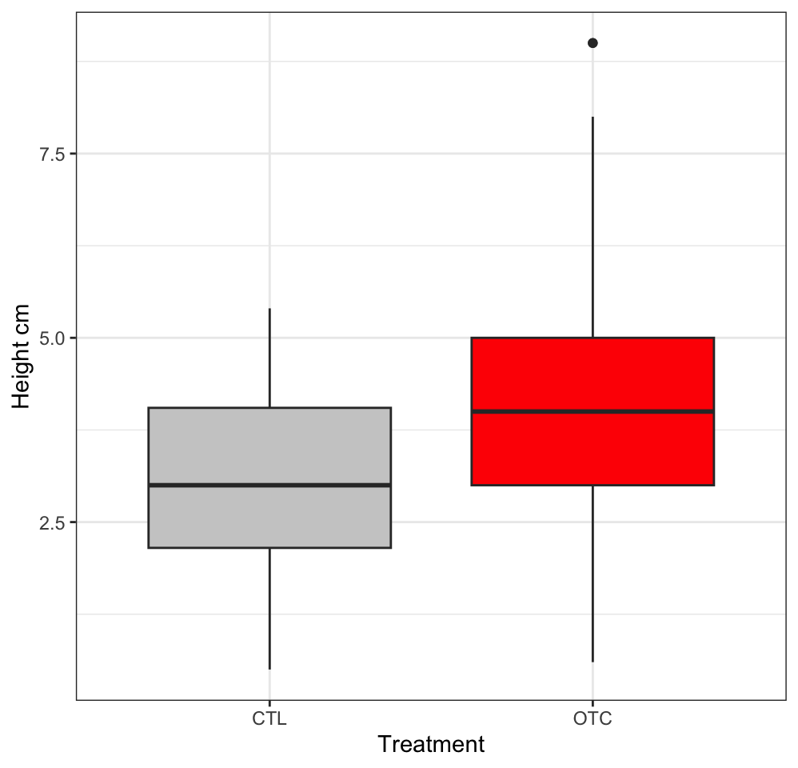

Effect of climate change on Bistorta vivipara traits on Svalbard
Introduction
Climate change is expected to have large impacts on both marine (Perry et al. 2005) and terrestrial ecosystems in Norway.
Methods
Field methods
The experiment was carried out in the high Arctic, in Endalen (78°11’N, 15°45’E), approximately four kilometres east of Longyearbyen, Svalbard, at 80-90 m elevation. The experiment was established in 2002 in three different habitats which are located in the south–southeast–facing hillside of the valley. The habitats differ in vegetation composition and the time of snowmelt (and hence the length of the growing season). The habitats include a relatively dry Dryas heath with thin snow cover (ca. 10 cm) and early snowmelt, a mesic Cassiope heath habitat with intermediate snow depth and melting date, and a moist snowbed community with deep snow (> 100 cm) and late snowmelt.
In 2001, ten plots (75x75 cm) were selected in each of the three habitats. Half of the plots were randomly assigned to the warming treatment in 2002 (open-top chambers, OTC) and the other half to control (CTL).
Data Analysis
Trait data are archived at OSF.
Data were analysed in R version 4.2.2 (R Core Team 2022), using tidyverse for data manipulation and plots (Wickham et al. 2019).
Results
In total, we measured the height of 77 Bistorta vivipera plants across the different habitats (Table 1). The Bistorta vivipera in the OTC plots is 1.19 cm ± 0.39 taller than in the control plots.
| Habitat | Number of plants | Height cm |
|---|---|---|
| CTL | ||
| CH | 9 | 2.8 |
| DH | 13 | 2.9 |
| SB | 13 | 3.5 |
| OTC | ||
| CH | 15 | 4.8 |
| DH | 17 | 3.4 |
| SB | 10 | 5.1 |
